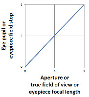
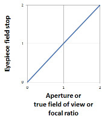
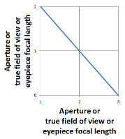
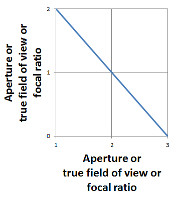
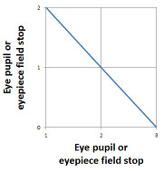

Telescope and Eyepiece Optimizer
by Mel Bartels

Specifying a telescope is a matter of compromise. For example, greater aperture results in restricted field of view; increasing the focal ratio increases the telescope's length; and the eye's pupil must always be taken into account. Before we get into the details of diagonal size and focusers, we stand to profit from looking at our compromises and assumptions. Shouldn't we be able to optimize any parameter against any other parameter to get the best of aperture, true field of view, focal ratio and eyepiece?
| Select calculator... | Use focal ratio or Use eye pupil, eyepiece FL |
| Telescope... | |
| Aperture (inches) = | limiting magnitude |
| Focal ratio = | |
| Focal length = | |
| True field of view (FOV) (deg) = | |
| Eye... | |
| Eye pupil (mm) = | |
| Eyepiece... | use coma corrector, x factor = |
| Select an eyepiece | |
| Focal length (FL) (mm) = | |
| Field stop diameter (mm) = | apparent field (deg) |
| Specifications: |
| Select | Manufacturer | Type | FocalLength | FieldStop | ApparentField | ExitPupil | TrueFOV | Magnification | Resolution |
Is there a master relationship that allows us to compare essential telescope specifications? And what is the minimum number of parameters?
The master equation should involve our eye; the eyepiece; and the telescope's aperture and true field of view. Adding the relationship:
eyepiece field stop = telescope focal length * true field of view
Aperture is the diameter of the telescope's main mirror or lens.
True field of view is the angle of the sky as seen through the eyepiece when used with the telescope.
Focal ratio is found by dividing the telescope focal length by the diameter of the mirror or lens.
Eyepiece focal length is the distance from the entrance of the eyepiece (where the parallel rays of light begin to converge) to its focal point.
Eyepiece field stop is the entrance to the eyepiece (ring inside the barrel) that limits the apparent field.
Eye pupil is the diameter of the opening of the eye's iris.
Let's look at the relationships by comparing parameters.
Example 1: Since aperture, true field of view, eyepiece focal length or focal ratio are all on one side of the equation, they oppose each other. That is, if one increases, another must decrease. Try it: increase aperture then press the 'calc true field of view' button. You'll see the true field of view decrease in response (be sure to turn on 'Use eye pupil, eyepiece focal length' first).
Example 2: Similarly since eyepiece field stop and eye pupil are on the same side of the equation, they oppose each other. That is, if one increases then the other must decrease. Try it: increase the eye pupil then press the 'calc eyepiece field stop'. You'll see the eyepiece field stop decrease.
Example 3: Since aperture and eye pupil are on opposite sides of the equation, if one increases, the other must increase too. Try it: increase aperture then press the 'calc eye pupil'. You'll see the eye pupil increase in response.





Increase aperture: increase eyepiece field stop, increase eye pupil, decrease true field of view, decrease eyepiece focal length, decrease focal ratio
Increase true field of view: increase eyepiece field stop, increase eye pupil, decrease aperture, decrease eyepiece focal length, decrease focal ratio
Increase focal ratio: increase eyepiece field stop, decrease aperture, decrease true field of view
Increase eyepiece focal length: increase eyepiece field stop, increase eye pupil, decrease aperture, decrease true field of view
Increase eyepiece field stop: increase aperture, increase true field of view, increase eyepiece focal length, increase focal ratio, decrease eye pupil
Stellar limiting magnitude calculated for low power via the equation, 9.8 + 5 * log10(aperture inches). An additional magnitude or more can be gained by going to high power.
I calculate resolution based on the unaided-eye's ability to just barely resolve two arc-minutes.
I avoid the equation, magnification = eyepiece apparent field of view / true field of view, because of the occasional slight inaccuracy in eyepiece specifications. Magnification is defined as the ratio of the object's size to its actual size. I use the equation, magnification = aperture / eye pupil. Also useful is magnification = telescope focal length / eyepiece focal length.
For more, see the analyzed telescope, also magnification and visual detection.
eod